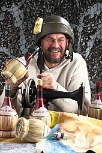

|
|
Past showsMike Maran's first production was Penny Whistles (1977) - a piece of musical storytelling for the theatre. It was adapted for television by David Rose and was screened on Easter Monday 1979. Since then Mike Maran productions have produced a new musical almost every year. You can find out more about some of the more recent past productions: Captain Corelli's Earlier highlights included: The Canty Hole (1986) - the story of Peter Williamson (Indian Peter) for the Edinburgh International Festival. An Atom of Delight (1991) - about the life and work of Neil Gunn, adapted for radio and produced for Radio 4 by Julian Wilkinson. Italia n' Caledonia (1993) which took the Edinburgh Fringe by storm. Caledonia n' Italia (1994) which took the Edinburgh Fringe by storm. Songs of Travel (1994) for the centenary of Robert Louis Stevenson, adapted for radio and produced by Richard Bannerman for Radio 3 The Fall of Bright Water (1995) about the life and work of Gavin Maxwell, co-produced with Eden Court Theatre and toured the Highlands of Scotland. Christ Stopped at Eboli (1996) |
|  |